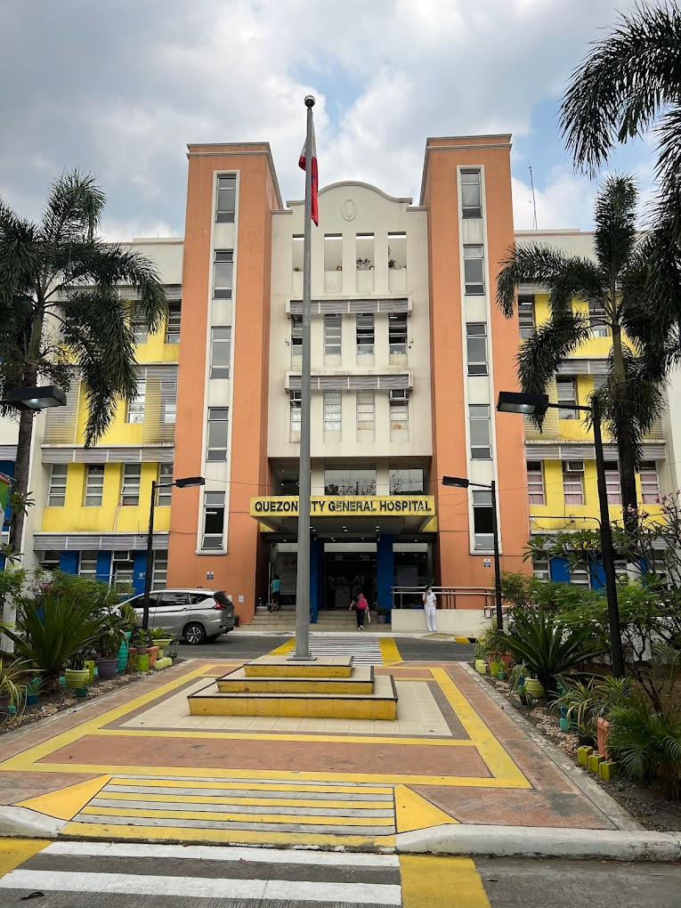

Quezon City General Hospital (QCGH)
Review xray films of patients with findings of TB but Direct Sputum Smear Microscopy (DSSM) is negative and recommend treatment.
Seminary Rd, Project 8, Quezon City, Metro Manila
Telephone No
: (02) 8863 0800
← Go back